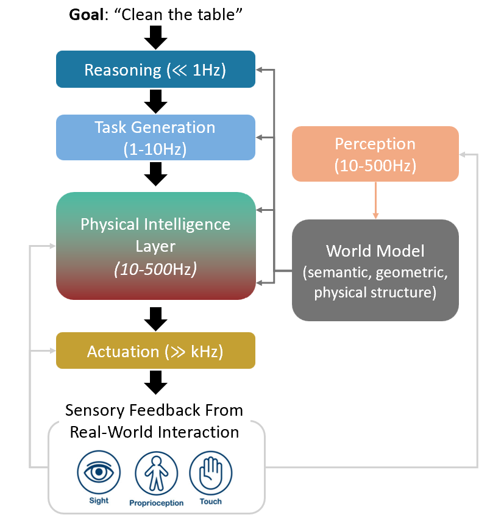
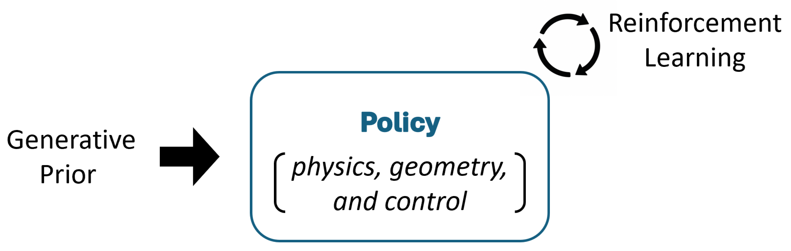
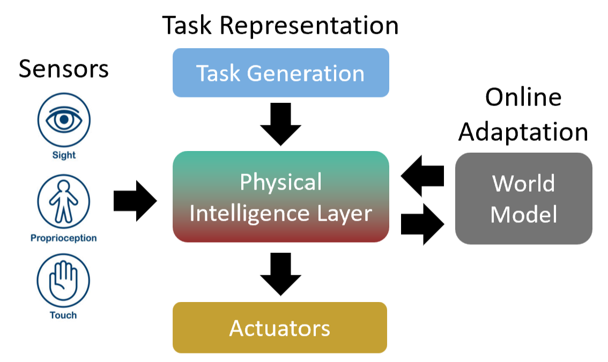

Robotics and Physical AI Lab @ Yonsei
RoΦ Lab
Also written RoPhi · pronounced ROH-fai
Ro\(\Phi\) Lab aims to develop general robot intelligence—robots that can perceive, plan, act, and adapt intelligently in the physical world. Our approach integrates learning with priors from physics, geometry, and control to achieve data-efficient, robust, and generalizable robotic behavior.
Research Preview
Loading research previews…
Join Us
PhD and Master’s positions are open. If you are interested in joining the lab, please reach out. Admissions follow the department’s schedule, but even if the timing does not line up, we strongly encourage you to start with an internship in the lab beforehand. See the Join page for details.
News
- Sep 2026 RoΦ Lab officially launches at Yonsei University.
- Loading recent news…
Research
The idea that intelligence must have a body, articulated in Brooks’s early 1990s work (Brooks, 1990), challenged the traditional view of intelligence as disembodied reasoning and stressed its grounding in real-world interaction. Pfeifer & Scheier (2001) later formalized this perspective as embodied intelligence. Brooks’s subsumption architecture (Brooks, 1986) showed that intelligent behavior can emerge from layered, loosely coupled modules running asynchronously and in parallel, with higher layers shaping—but not micromanaging—the reactive layers below. We take this layered, modular structure as a blueprint for general embodied intelligence.
Figure 1 illustrates an exemplar hierarchical, modular control architecture for robotic manipulation. Because each layer operates at its own timescale, the stack stays robust: fast low-level controllers need not wait for slower modules, so delay or noise in one layer is less likely to destabilize the system, while higher layers can still subsume lower ones when needed. The modular design also improves explainability, debuggability, and scalability.

Our research agenda has two broad directions. The first is to develop a physical intelligence layer: a physical policy that enables reactive, robust, safe, and generalizable robot behavior. Pure trajectory-based imitation learning or reinforcement learning often struggles to generalize to unseen observations and tasks. We believe that leveraging appropriate priors from generative models, physics, geometry, and control theory is key to building such a layer (Figure 2).
The second direction is to design the interfaces that connect this physical intelligence layer to the broader robotic system, including task representation, multimodal sensing, actuation, and the world models (Figure 3). A central challenge is to find the right level of abstraction for task representation. The representation should not be overly constrained, so that the low-level controller retains sufficient freedom and redundancy, but it should also be informative enough to enable real-time action generation. Developing such balanced task representations is an important research direction.
Another key question is how to properly integrate tactile and visual feedback. Rather than simply vectorizing all sensory inputs and ignoring their physical structure, we aim to exploit the geometric and physical structure of multimodal signals, such as contact locations, surface normals, force distributions, object geometry, and motion constraints.
Finally, online adaptation is essential, since real-world robotic systems inevitably face unmodeled effects, changing environments, and partial observations. To address this, we aim to develop statistically efficient few-shot online adaptation algorithms that can rapidly update the robot’s behavior using limited real-world interaction.


See the Research page for current projects and the Publications page for our papers.